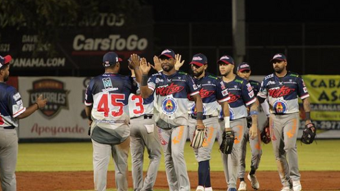
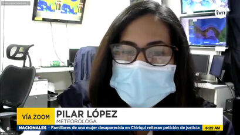

Sentencia de los hermanos Martinelli en EU sacude el caso Odebrecht en Panamá
Tras la sentencia dictada por el juez Raymond Dearie a los hermanos Ricardo Alberto y
Luis Enrique Martinelli Linares el pasado viernes por su participación en el esquema de
coimas de Odebrecht, las apuestas en el plano local corren por qué tanto harán o dejarán de
hacer las autoridades panameñas.

Carlos Lee destacó la labor de su abridor Oriel Caicedo y
Camargo en el triunfo de Metro sobre los tortugueros
Continúan las acciones del Campeonato Nacional del Béisbol Mayor 2022 y en el
estadio José Antonio Remón Cantera de la ciudad de Aguadulce, la novena de Panamá
Metro sorprendió a Bocas del Toro ganándoles 5 carreras por 3.

Nube de polvo del Sahara afectará a personas alérgicas en su paso por Panamá
Una vez más, el fenómeno del polvo del Sahara, que se registra anualmente tendrá afectaciones
en Panamá, pero con concentraciones bastantes bajas que provocan alergias a personas asmáticas,
así lo explicó la meteoróloga Pilar López.